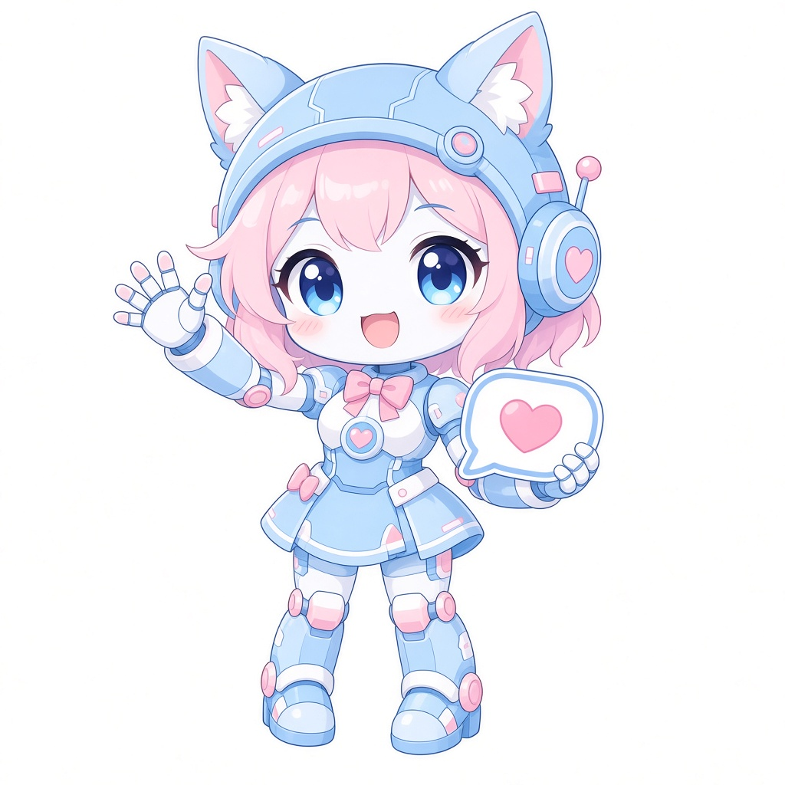

📋
功能菜单
整句只发这一个词即可（不带图片和 @）。
🙂
菜单

📋 功能菜单（直接发口令）
【娱乐】签到 / 运势 / 早晚安…
【图片】随机图片 / 搜图…
【资讯】番剧 / 日报 / 词云…
签到、运势、搜图、番剧、词云、自定义对话……在群里直接发送口令即可使用。
💡 发送 菜单 / 帮助 / 功能 / help 查看全部口令

整句只发这一个词即可（不带图片和 @）。
菜单
📋 功能菜单（直接发口令）
【娱乐】签到 / 运势 / 早晚安…
【图片】随机图片 / 搜图…
【资讯】番剧 / 日报 / 词云…
每天签到一次，记录连续签到。
签到签到
签到成功～今天也要元气满满哦！
抽一支今天的运势签，看看今天的人品值。
今日运势今日人品抽签小狐狸签今日运势
🦊 今日运势：大吉
宜：摸鱼、水群
和机器人道早安晚安，记录作息。
早安晚安晚安
晚安～好梦 🌙
生成趣味表情图，把群友“爬”走或“丢”出去。
爬@某人丢@某人给爷爬帮助爬 @群友
[一张表情图]
群内养成小游戏：注册、成长、和群友对决。
注册牛子牛子牛子帮助统计群内发言次数，看看谁是水群之王。
查看水群排行查看水群排行
🏆 本群水群排行
1. 某群友 · 520 条
2. ……
按关键词随机发送插画图片，可指定数量与标签（群管理可配置开关）。
色图来3张白丝色图以图搜图，帮你找到图片出处。
搜图 + 图片先发「搜图」再发图搜图 [图片]
找到啦！相似度 93%
来源：……
教机器人看到关键词就回一张图（需本群开通）。
学习图片对话 关键词+图片删除图片对话 关键词查看每日新番放送表，番剧1~7 对应周一到周日。
今日番剧明日番剧昨日番剧番剧1~7今日番剧
📺 今日更新：
· 某番 第5话
· ……
发送一张每日新闻速览图。
日报把群聊内容生成词云图，看看大家都在聊什么。
词云昨日词云本周词云本月词云我的今日词云本周词云
[一张词云图 ☁️]
自定义问答：教机器人遇到某句话怎么回。
学习对话 问句 回复删除对话 问句学习对话 你好 你好呀～
学会啦！
你好
你好呀～
在群里写自己的小日记。
创建日记本写日记 标题 内容查看日记删除日记 标题用自己的小号扫码登录，领养一只同款机器人。
登录（再发小号QQ）登录
请发送要登录的 QQ 号～
（小号QQ）
[登录二维码] 请用该账号扫码
不想再收到小号掉线提醒时使用。
私聊：取消登录提醒 QQ号查看机器人所在服务器的 CPU / 内存状态。
.sys.cpu.mem.sys
CPU 12% · 内存 63%
运行正常 ✅
查询挂机游戏的装备、神器资料。
id装备查询 名称id神器查询 名称以下口令仅机器人管理员可用。
向机器人所在的所有群发送公告。
公告 内容统计公会月贡与粉丝数据。
查看月贡月贡公会粉丝管理公会直播播报。
刷新公会播报缓存查询公会播报缓存测试公会播报在群里发起抽奖并开奖。
创建抽奖 人数 说明开奖管理随机图片功能的各群配置。
生成配置文件_cmd 命令